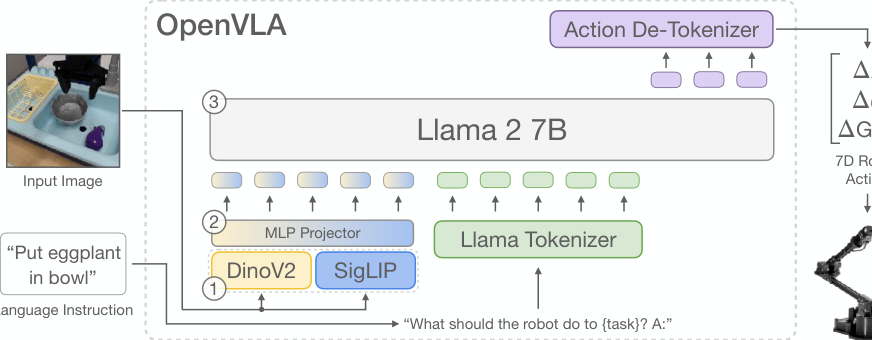
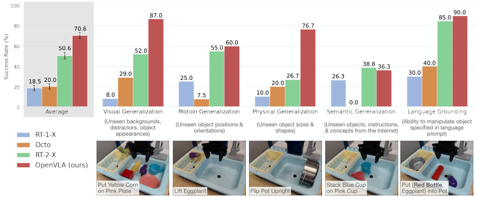
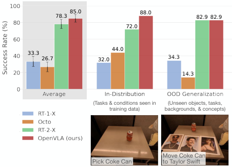
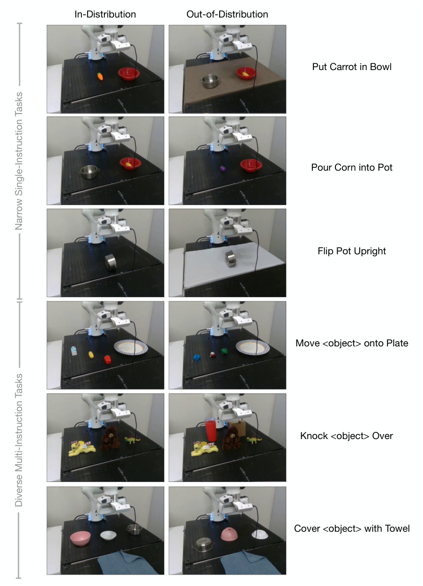
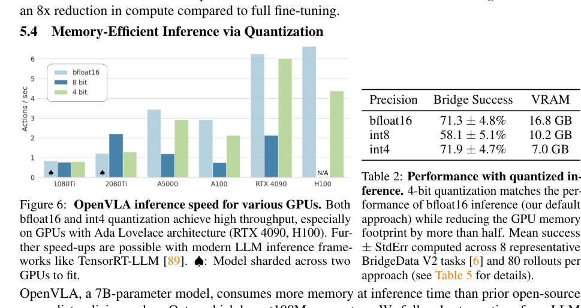

💡速记层 · 思想 / 逻辑 / 方法
默认读完就走的一层——只讲思想、逻辑、方法；效果只作验证。要核对原文/钻细节再看下面的「深读层」。
- 现有学习型机器人策略的最大弱点是泛化能力差——对场景干扰、新物体、新指令脆弱；互联网预训练的 VLM 恰好能提供这种泛化先验。
- VLA 直接 fine-tune VLM 预测动作已被 RT-2 证明可行，但 RT-2 是 55B 闭源模型，没有任何人能在自己机器上复现或微调。
- 既然 VLM 已有开源生态（Llama 2、Prismatic），把机器人动作表示成 VLM 词表里的 token，整个训练管线就退化成标准 next-token prediction，可直接复用 LLM 基础设施。
- 开源后，高效微调（LoRA）和量化推理是使 VLA 真正"可用"的关键缺失环节；本文系统探索并给出最佳实践。
- 结果：7B 模型在多机器人、多泛化轴的评测上超过 55B 闭源模型，且可在单张消费级 GPU 上微调和推理。
7B OpenVLA 在 WidowX + Google Robot 共 29 任务上比 55B RT-2-X 高 16.5%；微调后比 Diffusion Policy 高 20.4%（多指令多物体任务）；LoRA 微调媲美全参数；int4 量化无损——这些数字共同验证"把 VLM 管线直接用于 VLA"是对的。
想看具体数字（点开）
- BridgeData V2 (WidowX)：OpenVLA 平均 70.6% vs RT-2-X（未公开具体），在视觉/运动/物理/语言接地所有类别均超或持平 RT-2-X，仅语义泛化略低。
- Google Robot：OpenVLA 85.0% 平均 vs RT-2-X 78.3%（in-distribution）。
- Franka 微调：OpenVLA 唯一在所有测试任务上成功率 ≥50% 的方法。
- LoRA rank=32：68.2% ≈ 全参数 69.7%，训练参数 97.6M vs 7,188M。
- int4 量化：71.9% ≈ bfloat16 71.3%，VRAM 7.0GB vs 16.8GB。
- 预训练算力：64×A100 × 14 天 = 21,500 A100-hours。
Track A（移动操作 / 人形 VLA）高度相关：OpenVLA 是现阶段开源 VLA 的基准线，其骨干选择（Prismatic-7B = SigLIP+DINOv2+Llama2）、动作 token 化方案、LoRA 微调最佳实践都是后续工作（包括 OpenVLA-OFT 等）的直接起点。Track B（足式先进算法）不相关——本文完全不涉及 locomotion。故建议深读，尤其动作 token 化与 LoRA 微调细节。
◆核心观点 · 证据
每条 = 中文论点 + 📍页/节 + 🔤逐字原文(Ctrl-F 锚点) + 🀄译文 + 💡解读。
widespread adoption of VLAs for robotics has been challenging as 1) existing VLAs are largely closed and inaccessible to the public, and 2) prior work fails to explore methods for efficiently fine-tuning VLAs for new tasks, a key component for adoption.

Prismatic uses a two-part visual encoder, consisting of pretrained SigLIP [79] and DinoV2 [25] models. Input image patches are passed separately through both encoders and the resulting feature vectors are concatenated channel-wise. In contrast to the more commonly used vision encoders such as CLIP- [80] or SigLIP-only encoders, the addition of DinoV2 features has been shown to be helpful for improved spatial reasoning [44], which can be particularly helpful for robot control.
fine-tuning the vision encoder during VLA training to be crucial for good VLA performance. We hypothesize that the pretrained vision backbone may not capture sufficient fine-grained spatial details about important parts of the scene to enable precise robotic control.
we discretize each dimension of the robot actions separately into one of 256 bins. For each action dimension, we set the bin width to uniformly divide the interval between the 1st and 99th quantile of the actions in the training data. Using quantiles instead of the min-max bounds Brohan et al. [7] used allows us to ignore outlier actions in the data that could otherwise drastically expand the discretization interval and reduce the effective granularity of our action discretization.
OpenVLA is trained with a standard next-token prediction objective, evaluating the cross-entropy loss on the predicted action tokens only.


OpenVLA demonstrates strong results for generalist manipulation, outperforming closed models such as RT-2-X (55B) by 16.5% in absolute task success rate across 29 tasks and multiple robot embodiments, with 7x fewer parameters.

OpenVLA is the only approach that achieves at least 50% success rate across all tested tasks, suggesting that it can be a strong default option for imitation learning tasks, particularly if they involve a diverse set of language instructions.
LoRA achieves the best trade-off between performance and training memory consumption, outperforming "sandwich fine-tuning" and matching full fine-tuning performance while fine-tuning only 1.4% of the parameters. We find that the LoRA rank has negligible effect on policy performance and thus recommend using a default rank of r = 32.
With LoRA, we can fine-tune OpenVLA on a new task within 10-15 hours on a single A100 GPU – an 8x reduction in compute compared to full fine-tuning.

4-bit quantization results in similar performance as bfloat16 half-precision inference despite requiring less than half the amount of GPU memory. 4-bit quantized models can run at 3Hz on the A5000, thus more closely matching the system dynamics during data collection.
OpenVLA is the first generalist VLA that is open-source and thus supports future research on VLA training, data mixtures, objectives, and inference.
we are the first to demonstrate the effectiveness of modern parameter-efficient fine-tuning and quantization approaches for VLAs; and (4) OpenVLA is the first generalist VLA that is open-source and thus supports future research on VLA training, data mixtures, objectives, and inference.
⎘开源状态
OpenVLA 是目前开放程度最高的通用 VLA 之一。
- 代码
- 已开源 github.com/openvla/openvla（MIT；PyTorch；支持 LoRA 微调 + 量化推理 + FSDP 多节点训练）
- 权重
- 已开源 openvla/openvla-7b 及微调变体，HuggingFace AutoModel 兼容
- 训练数据
- 已开源 Open X-Embodiment 970k 子集（公开数据集，论文附完整 mixture weights）
- 微调 notebooks
- 已开源 提供 HuggingFace 微调 notebooks，开箱可运行
The OpenVLA checkpoints and PyTorch training pipeline are fully open-source and models can be downloaded and fine-tuned from HuggingFace.
⚖批判 · 评级
① 标志性开源里程碑：OpenVLA 把"用 VLM 做 VLA"这条路线彻底开放，几乎所有后续开源 VLA 工作（OpenVLA-OFT、π0、RoboVLMs 等）都以它为起点或对照。② 系统性最佳实践：LoRA rank=32、int4 量化、视觉编码器解冻、动作 token 分位数离散化——这些细节在论文里都有受控消融支撑，是工程复现的可靠指南。③ 数据充分：970k OXE episodes 的 mixture weights 完整公开，可以自己重现或改配方。
① 单帧限制：仅支持单张图像输入，无 proprioception、无历史帧；现实机器人通常需要多摄像头+本体感觉，后续工作（OpenVLA-OFT）才补上。② 无动作 chunking：逐 token 预测导致在高精度、高频任务上轨迹抖动，Diffusion Policy 在窄任务上仍更优；论文承认这是当前主要限制。③ 推理频率瓶颈：bfloat16 下 RTX 4090 约 6Hz；ALOHA 类双臂精细操作需要 50Hz，差距仍大。④ 评测设置局限：BridgeData V2 与 Google Robot 任务数量（29个）相对较少，多为桌面单臂，对双臂、全身控制、长程任务的评测缺失。
评级：Important 技术本身较为直接（fine-tune VLM = VLA 早已有 RT-2 先例），但完整的开源生态+最佳实践手册+强力基准线，对社区影响力超出技术新颖性本身。